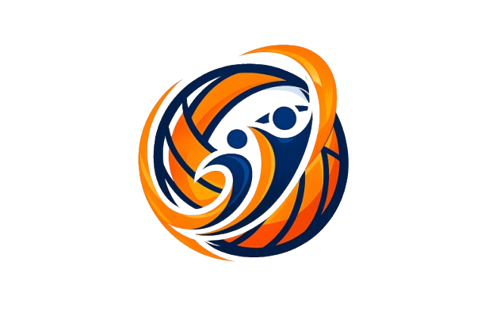
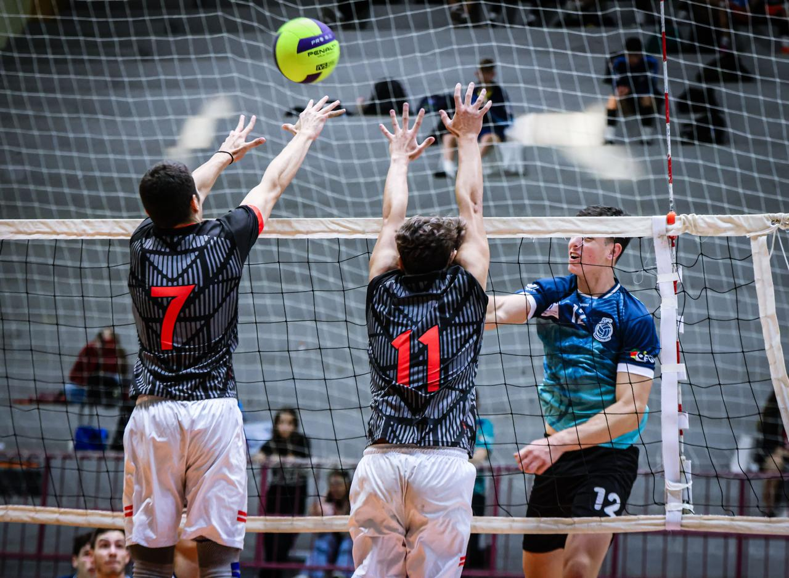
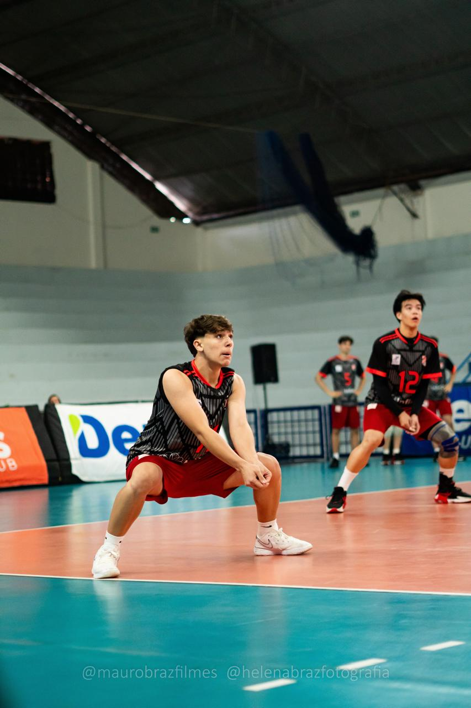

O CampUs é uma plataforma digital desenvolvida para reunir todas as informações relacionadas a campeonatos de vôlei em um único ambiente. Seu principal objetivo é facilitar a organização das competições e oferecer uma experiência prática para atletas, treinadores, olheiros e torcedores. No site, os usuários podem consultar os campeonatos em andamento e futuros, visualizar datas, locais e horários das partidas, acompanhar a classificação das equipes, conhecer os melhores jogadores (MVPs) e conferir os próximos confrontos. Além disso, a plataforma disponibiliza uma seção com as regras oficiais do vôlei, auxiliando tanto iniciantes quanto atletas experientes. O CampUs também conta com um sistema de login que permite o acesso de atletas, treinadores e olheiros. Dessa forma, a plataforma pode ser utilizada para o gerenciamento de participantes e, futuramente, para a realização de inscrições em campeonatos, cadastro de atletas e equipes, acompanhamento de estatísticas individuais e comunicação entre organizadores e participantes. Com uma interface simples, moderna e intuitiva, o CampUs busca tornar a organização de eventos esportivos mais eficiente, promovendo o voleibol e facilitando o acesso às informações mais importantes sobre as competições.
Gabriel Dias Ritter tem 17 anos e é um ex jogador de vôlei da equipe da sogipa, nasceu em Porto Alegre no dia 17/10/2008 "Nasci pra fazer hsitória" - Diz ele. Jogou por longos 5 anos, e marcou a camisa 11 com sua linda história no clube. Em 2026 descidiu se aposentar do vôlei, para se desenvolver mais como homem, começou a trabalhar em uma DP, mais específicamente no DEIC. A ideia de criar o CampUs surgiu a partir da necessidade de facilitar o acesso às informações sobre campeonatos de vôlei.

